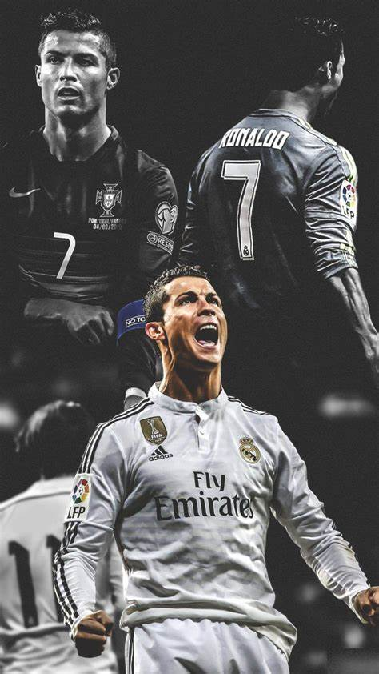

Cristiano Ronaldo dos Santos Aveiro
Tanggal lahir : 5 Februari 1985 (umur 39)
Tempat lahir : Funchal, Madeira, Portugal
Cristiano Ronaldo dos Santos Aveiro lahir 5 Februari 1985) adalah seorang pemain sepak bola profesional asal Portugal yang bermain di klub Arab Saudi Al-Nassr FC sebagai penyerang dan juga kapten tim nasional Portugal. Sering dianggap sebagai pemain terbaik di dunia dan secara luas dianggap sebagai salah satu pemain terhebat sepanjang masa, Ronaldo memenangkan lima penghargaan Ballon d'Or[cat. 3] dan empat Sepatu Emas Eropa. Ia sejauh ini memenangkan 35 trofi sepanjang kariernya, termasuk tujuh gelar liga, lima Liga Champions UEFA, satu Kejuaraan Eropa UEFA dan satu Liga Negara UEFA. Ronaldo memegang rekor gol (140) dan umpan gol (42) terbanyak di Liga Champions, gol terbanyak di Kejuaraan Eropa UEFA (14), dan gol internasional terbanyak oleh pemain pria (123). Ia adalah salah satu dari sedikit pemain yang tercatat telah membuat lebih dari 1.100 penampilan di sepanjang karier profesionalnya, dan mencetak lebih dari 891 gol resmi baik untuk klub dan negara.
Lionel Andrés Messi[
Tanggal lahir : 24 June 1987 (age 36)
Tempat lahir : Rosario, Argentina
Lionel Andrés Messi juga dikenal sebagai Leo Messi[5] (lahir 24 Juni 1987) adalah pemain sepak bola profesional asal Argentina yang bermain sebagai penyerang untuk klub Major League Soccer, Inter Miami CF dan merupakan kapten tim nasional Argentina. Sering dianggap sebagai pemain terbaik di dunia dan sering dianggap sebagai pemain terhebat sepanjang masa.[6][7][8][9] Messi telah memenangkan tujuh penghargaan Ballon d'Or, enam Sepatu Emas Eropa, dan pada tahun 2020 dinobatkan sebagai Ballon d'Or Dream Team. Ia menghabiskan seluruh karier profesionalnya bersama Barcelona, di mana ia memenangkan 34 piala, termasuk sepuluh gelar La Liga, tujuh gelar Copa del Rey dan empat Liga Champions UEFA. Seorang pencetak gol yang produktif dan playmaker kreatif, Messi memegang rekor sebagai pencetak gol terbanyak sepanjang masa di La Liga (474 gol), gol terbanyak di La Liga dan Eropa dalam satu musim (50 gol), trigol terbanyak di La Liga (36) dan Liga Champions UEFA (8), serta umpan gol terbanyak di La Liga (192), umpan gol terbanyak La Liga dan Eropa selama satu musim (21)[10] dan umpan gol terbanyak di Copa América (17). Ia telah mencetak lebih dari 750 gol selama karier seniornya untuk klub dan negara, dan gol terbanyak yang pernah dibuat oleh seorang pemain yang bermain hanya untuk satu klub.
About Me

Selamat datang di World Of Football.
Popular Post



Follow Me